11. Reviewing the generated HTML site
We will now examine the HTML output of this ODT/DOCX document. We have already seen that the converter preserves the table of contents.
11.1. The top bar of the site
Let’s look at the site’s top bar:
 |
- In [1], the site name defined in [config.py];
- At [2], the icon that lets you switch between dark and light modes;
- At [3], the icon that links to the GitHub repository where the HTML site will be exported. Also defined in [config.py];
- At [4], the icon that lets you hide or show the table of contents;
11.2. The site’s footer
Now let’s look at the footer:
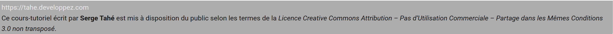 |
This is the footer defined in the [config.py] file.
11.3. The home page
The title page of the ODT/DOCX document was as follows:
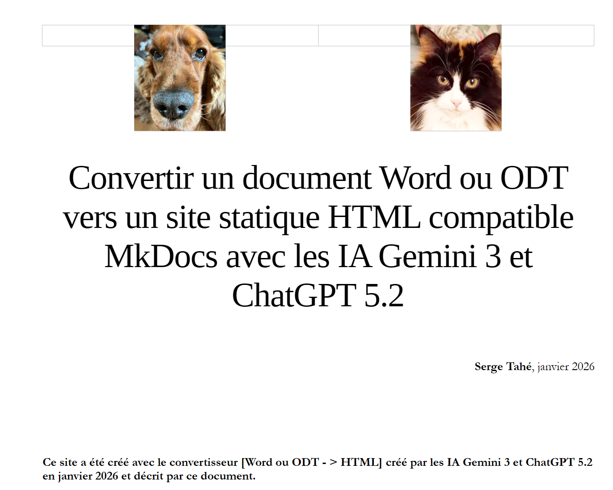 |
This title page of the ODT/DOCX document becomes the HTML site’s home page:
 |
The Gemini 3 / ChatGPT converter places everything above—in the ODT / DOCX document, the first Level 1 heading, i.e., the ‘Title 1’ style—on the Home page. If you include images as shown above, it will display them . You can therefore imagine giving your site a cover, just like a real book. In [1], this is the main title of the document. Its rendering is controlled by the following lines in the configuration file [config.py]:
# -------------------------------------------------------------------------
# Document Title Detection
# -------------------------------------------------------------------------
"document_title": {
# ODT styles to be considered as the main title of the document (global H1)
"style_names": [
"P1"
],
# CSS applied to this title in the generated Markdown
"css": "font-size: 28px; font-weight: bold; margin-bottom: 1em; line-height: 1.2; color: #2c3e50;"
},
- lines [6-8]: the list of possible styles for your document’s title. When I look at this document, the LibreOffice style for my title is ‘Main Title’. However, the Gemini converter couldn’t find it. It logged the styles it encountered, and this displayed [P1]. This is a major issue with LibreOffice: the displayed style names do not match the internal names used by the software. They are only there to adapt to the user’s language;
- Line 10: Once the main title has been detected, you can configure its rendering. I wanted a font size of 28 (font-size: 28px;) and bold (font-weight: bold);
With the images and the title style, you can create an attractive home page.
The main title of your document may not have one of the styles defined in lines [6-8]. To find the style of your main title, use the following line in the [config.py] file
With the value [true], the style of the paragraphs preceding the first Level 1 heading—i.e., the paragraphs on the homepage—will be displayed when the Gemini/ChatGPT converter runs. So, for a document other than this one, I obtained the following logs:
[DEBUG PRE-H1] Style='Standard (WW)' (Clean='standard (ww)') | Text='...'
[DEBUG PRE-H1] Style='P1' (Clean='p1') | Text='...'
[DEBUG PRE-H1] Style='P1' (Clean='p1') | Text='...'
[DEBUG PRE-H1] Style='P1' (Clean='p1') | Text='...'
[DEBUG PRE-H1] Style='P3' (Clean='p3') | Text='...'
[DEBUG PRE-H1] Style='P1' (Clean='p1') | Text='...'
[DEBUG PRE-H1] Style='P1' (Clean='p1') | Text='...'
[DEBUG PRE-H1] Style='P1' (Clean='p1') | Text='...'
[DEBUG PRE-H1] Style='P1' (Clean='p1') | Text='...'
[DEBUG PRE-H1] Style='P4' (Clean='p4') | Text='Introduction to PHP7 through examples...'
>>> DETECTED DOCUMENT TITLE: Introduction to the PHP7 language through examples
[DEBUG PRE-H1] Style='Standard (WW)' (Clean='standard (ww)') | Text='...'
[DEBUG PRE-H1] Style='Standard (WW)' (Clean='standard (ww)') | Text='...'
[DEBUG PRE-H1] Style='Standard (WW)' (Clean='standard (ww)') | Text='...'
[DEBUG PRE-H1] Style='Standard (WW)' (Clean='standard (ww)') | Text='...'
[DEBUG PRE-H1] Style='Standard (WW)' (Clean='standard (ww)') | Text='...'
[DEBUG PRE-H1] Style='Standard (WW)' (Clean='standard (ww)') | Text='...'
[DEBUG PRE-H1] Style='P5' (Clean='p5') | Text='Serge Tahé, July 2019...'
[DEBUG PRE-H1] Style='P5' (Clean='p5') | Text='...'
[DEBUG PRE-H1] Style='P6' (Clean='p6') | Text='...'
[DEBUG PRE-H1] Style='Heading 1' (Clean='heading 1') | Text='Introduction to PHP 7...'
- line 10, the document title has the ‘P4’ style;
In the [config.py] file, I then added the following lines:
"document_title": {
"style_names": [
"P4"
],
"css": "font-size: 28px; font-weight: bold; margin-bottom: 1em; line-height: 1.2; color: #2c3e50;"
},
- line 3, the style I was looking for;
This is why the debugger displays the lines:
[DEBUG PRE-H1] Style='P4' (Clean='p4') | Text='Introduction to the PHP7 language through examples...'
>>> DOCUMENT TITLE DETECTED: Introduction to the PHP7 language through examples
It encountered the ‘P4’ style and then displays that the document title has been found. Once it has been found, you can set the [debug] key to [false] in [config.py]:
Now let’s look at the conversion of the [Examples] chapter, which contains the examples that the Gemini/ChatGPT converter can handle:
11.4. Bulleted lists
ODT / DOCX document:
 |
Above, the text [Bulleted lists] is highlighted because it is a reference associated with a cross-reference.
HTML document:
 |
Note that while the ODT/DOCX document uses different bullet styles, the HTML document uses only one type of bullet.
11.5. Numbered lists
ODT/DOCX document:
 |
HTML document:
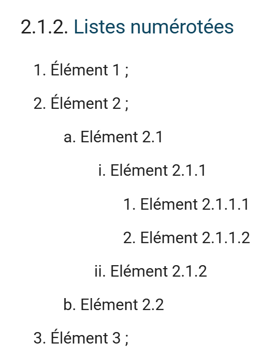 |
11.5.1. Mixed lists 1
ODT/DOCX document
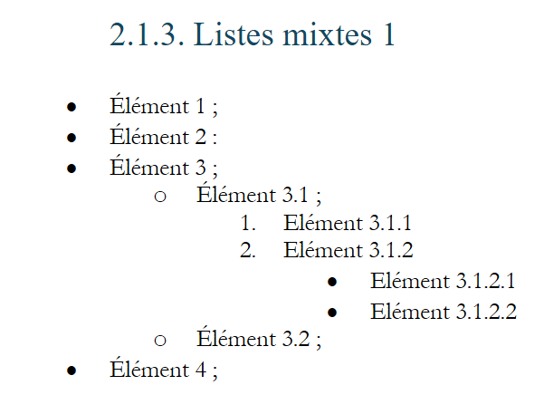 |
HTML document
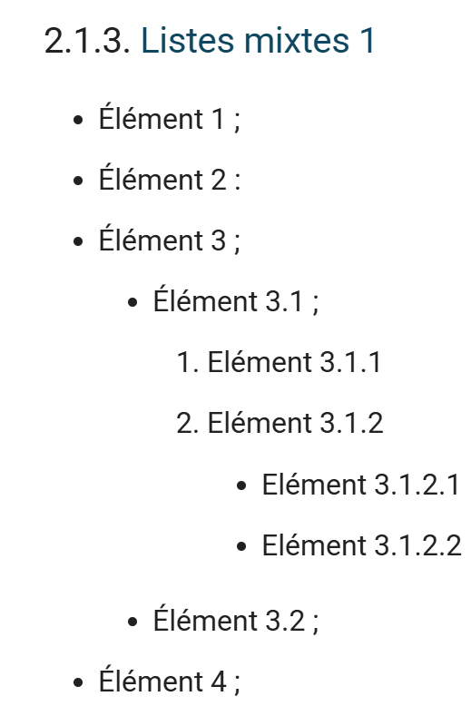 |
Here too, there are sometimes differences between the types of bullets used.
11.5.2. Mixed lists 2
ODT / DOCX document
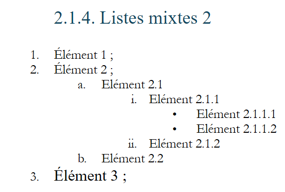 |
HTML document
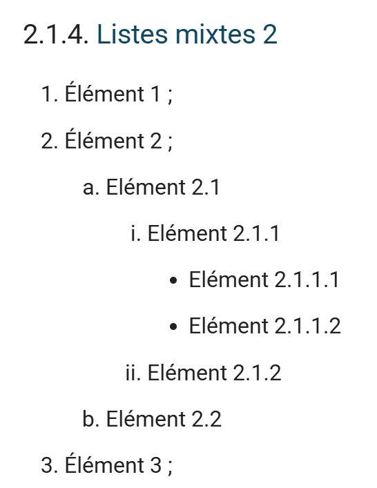 |
11.6. Rich code blocks
Rich code blocks are rendered identically in HTML (except for the background color). Here are three examples:
11.6.1. Example 1
ODT / DOCX file
 |
HTML output
 |
11.6.2. Example 2
ODT / DOCX document:
 |
HTML output
 |
11.6.3. Example 3
ODT / DOCX document
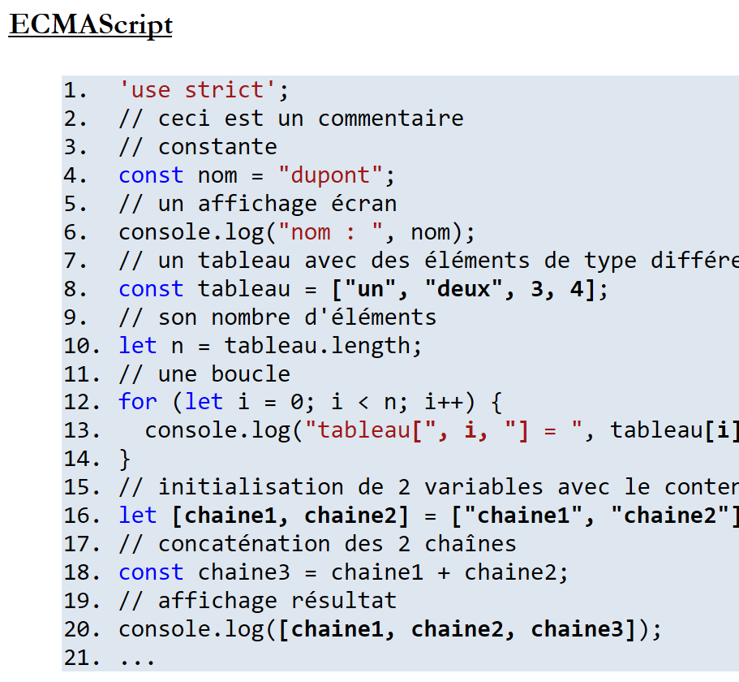 |
HTML output
 |
11.7. Plain text code blocks
Plain text code blocks found in the ODT / DOCX document are syntax-highlighted by MkDocs based on the language found in the code block. To help the converter identify the correct language, "key strings" have been added to the [config.py] file for each language. The converter counts the "key strings" found. It then associates the code block with the language that has the most "key strings" found.
Let’s look at a few examples.
11.7.1. Example 1
ODT / DOCX document (Java)
 |
HTML Output
 |
In the HTML document, we can see that the Java code has been syntax-highlighted.
11.7.2. Example 2
ODT / DOCX document (XML)
 |
HTML output
 |
11.7.3. Example 3
ODT / DOCX document (HTML)
 |
HTML output
 |
11.8. Other code blocks
ODT / DOCX document
An execution result with a first line that does not start at 1:
 |
HTML output
 |
A code block that is not numbered in ODT remains so in the HTML:
ODT / DOCX document
 |
HTML rendering
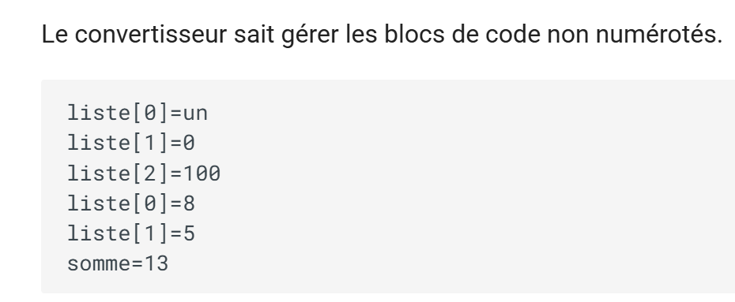 |
11.9. Links
ODT / DOCX document
 |
HTML rendering
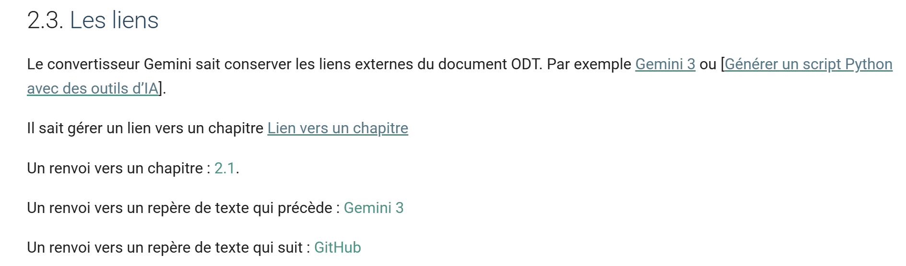 |
11.10. Text formatting
ODT / DOCX document
 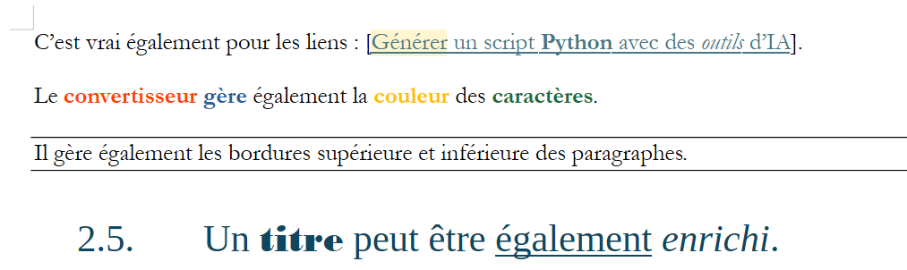 |
HTML rendering
 |
11.11. Images
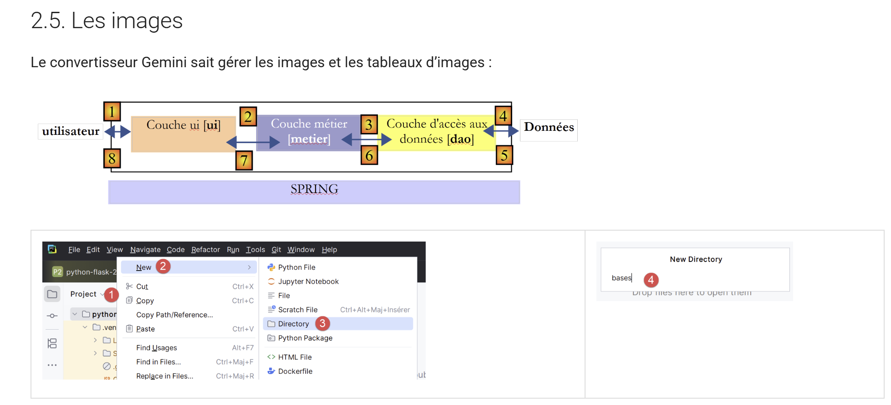 |
Note that the Gemini / ChatGPT converter preserves image resizing done in the ODT / DOCX document.
11.12. Protected characters
ODT / DOCX document
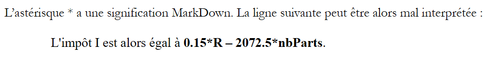 |
HTML Rendering
 |
ODT / DOCX document (Markdown)
 |
HTML output
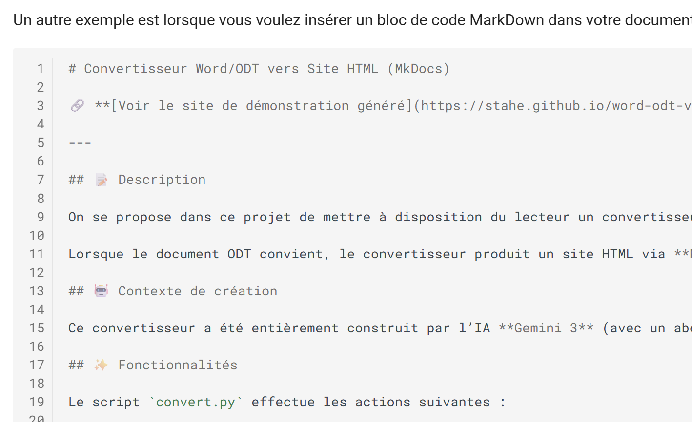 |
- Markdown code has been preserved;
11.13. Tables
ODT / DOCX document
 |
HTML rendering
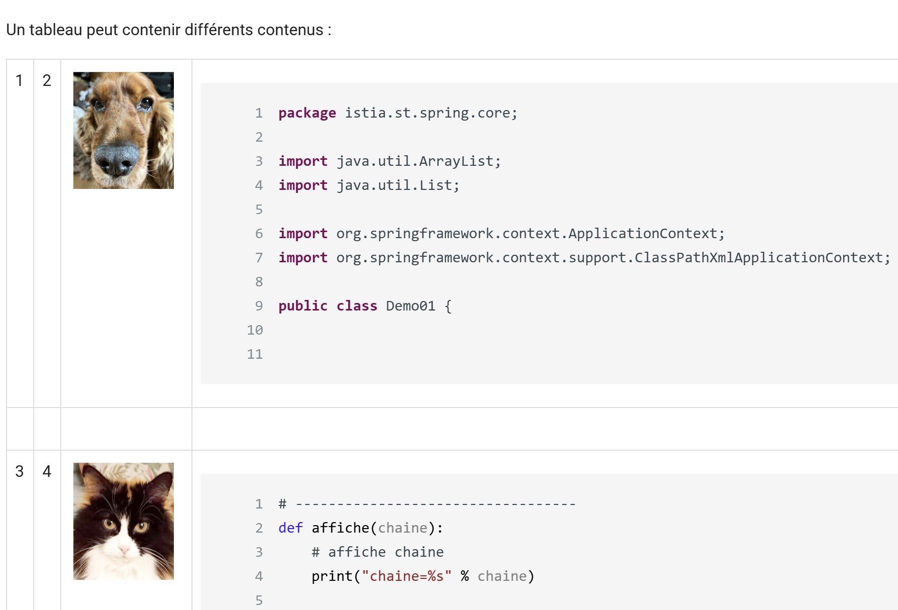 |
11.14. Footnotes
 |
11.15. Known issues
Some issues have been identified, but they can be corrected by modifying the ODT / DOCX:
- code blocks must be followed by a blank line; otherwise, the code block may render incorrectly. The identified issue is code immediately followed by a heading without being separated from it by a blank line;
- Bulleted lists cannot have a bottom border. To add one, insert a blank line after the last list item;
- Bulleted lists must be nested. Thus, a level 2 list must always be included within a level 1 list; otherwise, the level 2 list is rendered as code;
As new versions of the converter are released, some of these issues will be resolved. The three mentioned above can be avoided by correcting the source document.
11.16. Other Cases
If your document uses features other than those mentioned above, it is highly likely that these will not be supported by the Gemini/ChatGPT converter. What should you do then? You can submit your new request to one of the AIs by providing it with the current converter:
 |
- In [1], I attach the converter for this document;
- In [2], I make my new request;
You’ll likely go through many iterations. When a version is stable, make a note of its number so you can provide it to the AI in case of a regression. It’s also a good idea to make a copy of each stable version. A major drawback of both AIs is that they regress quite easily. All it takes is asking for a new feature for the AI to break code that was previously working. Hence the importance of noting the version numbers of stable versions so you can revert to them. In January 2026, it seemed to me that ChatGPT 5.2 was less tend to regress than Gemini 3.